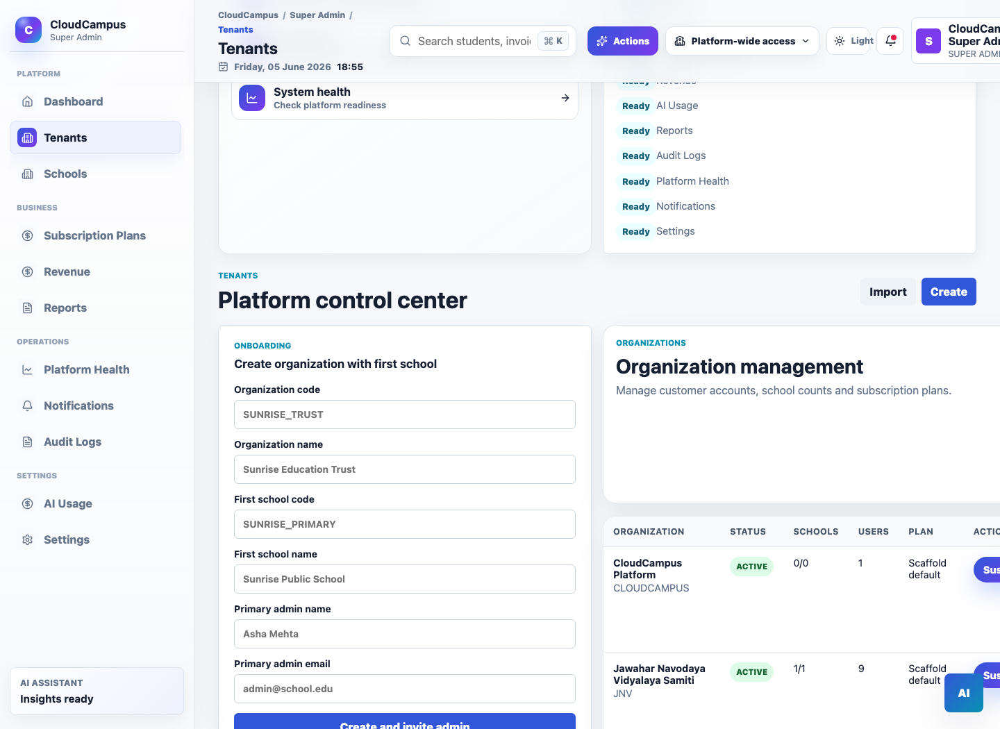
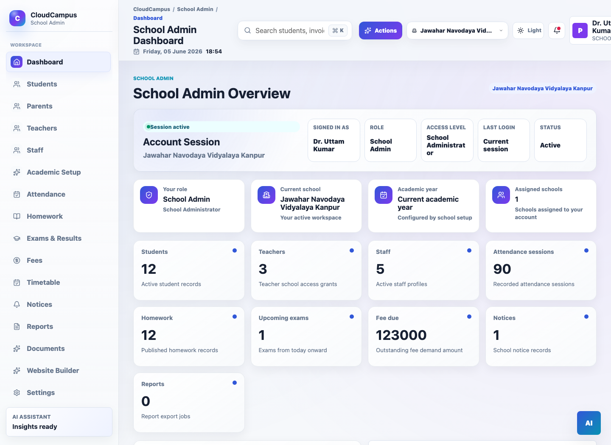
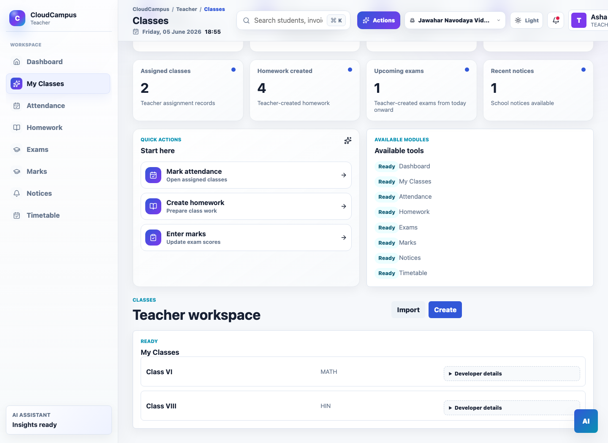
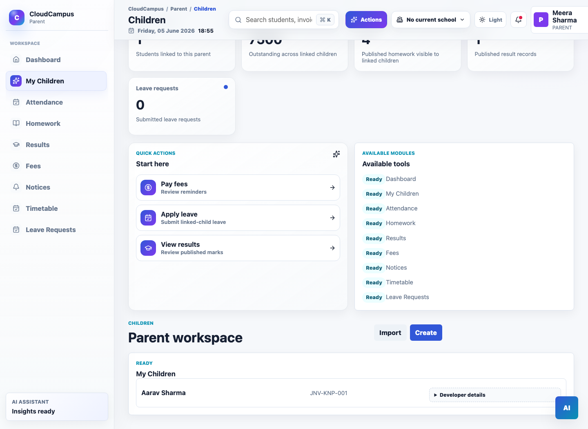

Overview
CloudCampus is a school operations platform shaped around a simple architectural question: which tenant, school, role, and workflow is an authenticated user allowed to touch? The product direction brings onboarding, academic operations, attendance, homework, exams, fees, notices, reporting, and audit-aware workflows into one multi-tenant system.
Problem
Schools and multi-campus organizations need shared digital workflows without losing boundaries between organizations, schools, roles, and data. Manual processes also make access control, reporting, and expansion harder to manage consistently.
Solution
The platform models a tenant and school hierarchy, uses server-owned access context, and exposes role-specific workflows through a Java/Spring Boot backend and React portals. The design keeps tenant and school boundaries visible in the data model and service layer so new modules can build on the same security context.
My Role
I am the founder, backend engineer, and product engineer for CloudCampus. I own product scope, backend architecture, API design, tenancy and access-control decisions, deployment readiness, and roadmap planning.
Architecture
The current shape is a modular monolith with clear domain boundaries. Identity and access control sit close to authentication because academic, attendance, finance, and reporting workflows all depend on a validated user context.
Multi-tenancy
A tenant can represent a trust, school group, or independent school. A school belongs to a tenant, and users receive access through server-owned role and school context rather than client-supplied identifiers. This keeps authorization connected to tenant, school, role, and domain ownership checks.
Authentication and API design
Spring Security and JWT establish identity, while service-level guards apply role and scope decisions to business actions. Request validation, centralized error handling, audit records, and explicit DTO boundaries keep the API surface predictable for client integrations.
Data and infrastructure
PostgreSQL-oriented schema design, Flyway migrations, Docker packaging, Nginx assets, and GitHub Actions workflows provide a repeatable foundation for local development and controlled deployment recreation.
Implemented and next
The repository currently includes authentication and authorization foundations, tenant onboarding, school access guards, student/staff and academic foundations, audit logging, API workflows, and role-specific portals.
Current stage: CloudCampus is under active development. Local and controlled staging-style workflows are represented in the project; production pilot hardening, hosted operations proof, and additional integrations remain on the next part of the roadmap.
Product Screenshots
These captures show the product workflows and role-aware surfaces being developed.




Lessons learned
- Tenant context should be a backend-owned decision, not a loose request parameter.
- Role checks become safer when combined with tenant, school, and object ownership checks.
- Product scope and operational readiness need to be discussed together for SaaS systems.